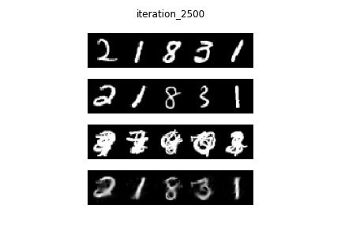

Master's final project
The extraction of musical instruments from bachata songs
using semantic segmentation
for audio source separation
CNN / Semantic Segmentation / Meta-learning / Signal Processing / STFT / PyTorch
Could we teach a machine to separate the individual instruments within a bachata
(genre of latin music) song, given its typical instruments, polyrhythms and section
structure?
In this project this is what we attempted to do. To test our hypothesis and model
idea, first we studied a much simpler problem using the MNIST dataset: extract a
number (e.g. 5) given that it is present in a mixture of numbers (i.e. 5,1,3,9 drawn
on top of one another).
After successfully solving this problem with high accuracy, using U-Net architecture
and semantic-segmentation, we moved this model structure to our original, more
complex but highly similar problem, using audio domain.
Our dataset was a large collection of 4/8 beat-long-loops of individual instruments
played at particular sections within bachata songs (e.g. intro, chorus, verse,
bridge, outro).
The preprocessing and data preparation phase included selecting, sorting and
organising the right loops, followed by resampling and normalising the clips by
shrinking/expanding them using Fast Fourier Transform so that they all have
universal length/tempo (BPM) and can be used for ML purposes.
The model had 3 input clips: a mixture, the ground truth (present in the mixture),
and the target (same kind as but different to the target). Their spectrograms were
produced using STFT and a heatmap and fed into our U-Net like CNN.
Essentially our goal was to find a target-like pattern in the mixture and compute
the loss by comparing it to the ground truth pattern.
Having the mixture, target and ground truth clips chosen randomly, we could build
our input data on the fly. Once we achieved high enough performance, we moved on to
testing it on real bachata songs.
Careful preprocessing was needed on real songs in order to feed them to our model:
beat tracking to split a song into clips of 4 beats, resampling,
stretching/shrinking, STFT and heatmap to produce the input spectrograms.
The predicted clips were then stretched/shrank back to their original tempo and
concatenated to form the full-song-length extracted instrument.
Further improvements to be done: implement a GAN for more defined predictions,
possible residual blocks in the U-Net, training the model on original audio
quality,
examine the louder starting beat in the audio clips, estimate the downbeat
locations
instead of standard beat locations to resolve issues on songs that have intro.
RESULTS: NUMBER MODEL
RESULTS: AUDIO MODEL
examples |
mixture |
bongo |
guira |
bass |
guitar |
||||
|---|---|---|---|---|---|---|---|---|---|
|
ground truth |
prediction |
ground truth |
prediction |
ground truth |
prediction |
ground truth |
prediction |
||
| example 1 | |||||||||
| example 2 | |||||||||
| example 3 | |||||||||
| example 4 | |||||||||
| example 5 | |||||||||
RESULTS ON BACHATA SONGS
artist &
|
original |
extractions / predictions |
relative
|
|||
|---|---|---|---|---|---|---|
|
bongo |
guira |
bass |
guitar |
|||
| Prophex: Vanidosa |
good | |||||
| Lucho Panic: El Guardaespaldas |
good | |||||
| Prince Royce: Te robare |
fair | |||||
| Kiko Rodriguez: Vagabundo, borracho & Loco |
poor | |||||